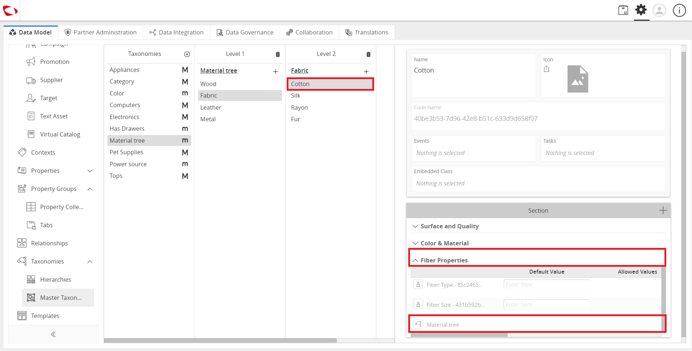

Dependent Attributes¶
The Dependent Attributes feature is an admin feature that configures dependent attributes, which are used to introduce additional set of properties that should be filled out because of a logical relationship they have with each other.
| Key Term: |
|
| Description: |
|
| Related topics: | |
| Application: |
|
How to do: Dependent Attributes¶
To configure a dependent attribute, follow the steps provided:
- Log in to Contentsphere and click on the Administration button to go to the configuration panel.

- Create the attributes, tags, and property collection for the various dependent attributes.
- Go to Taxonomies section and then, select Master Taxonomies.

- Click on the “+” icon to create a new taxonomy.
- Provide a name for the taxonomy. Also, disable the Major Taxonomy so that a Minor Taxonomy will be created. Click on the Create button.

- Click on the “+” icon to add a property collection.

- To add another level, click on the “+” icon and a list of all the master tags will be shown. Select or add more tags.
- Add more levels or property collections, as desired.
- Once the taxonomy is created, the minor taxonomy can then be added as a property collection. In the Property Collections tab, search for the minor taxonomy and add it as one of the properties.

Note: Once the minor taxonomy is added, view the dependent attributes in runtime.

Last updated: Apr 20, 2018